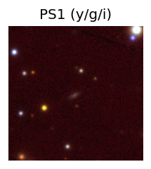
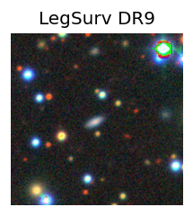
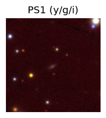
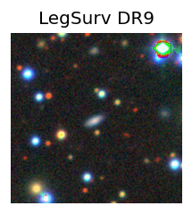
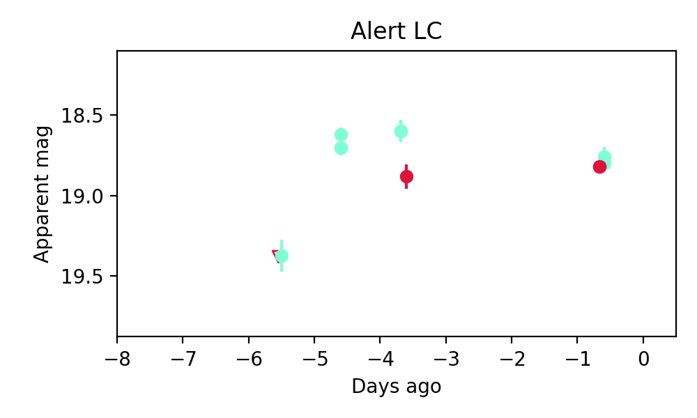

Candidate List 20250614Previous Day Next Day
Section 1: New Sources (age<1d) Section 2: Old (1-5d) sources observed last nightplaceholder
Section 2: Older Sources Observed Last Night (1)
0. ZTF25aaurzyo (FBOT?) [Back to Top] [Share] [Trigger Swift] [Fritz] [Lasair]RA, Dec: 287.26777, 47.87971 19h 9m4.26s, 47d52m46.96sGalactic (l, b): 78.56486, 16.99814 ext(g-r) = 0.063 

PS1: 0 sources in 3 arcsec
LegacySurvey: 1 sources in 3 arcsec Closest: d = 1.39 arcsec, 148.0 deg (east of north) photoz=0.11 (68% bounds 0.08, 0.13), type=SER peak abs mag = -19.9 (68% bounds -19.24, -20.4)

Extinction-corrected gr color:
From alerts: -0.35 +/- 0.09 mag
Rise Rate:
g: 0.25 mag/day
r: 0.35 mag/day
i: -99 mag/day
Fade Rate:
g: -99 mag/day
r: -99 mag/day
i: -99 mag/day